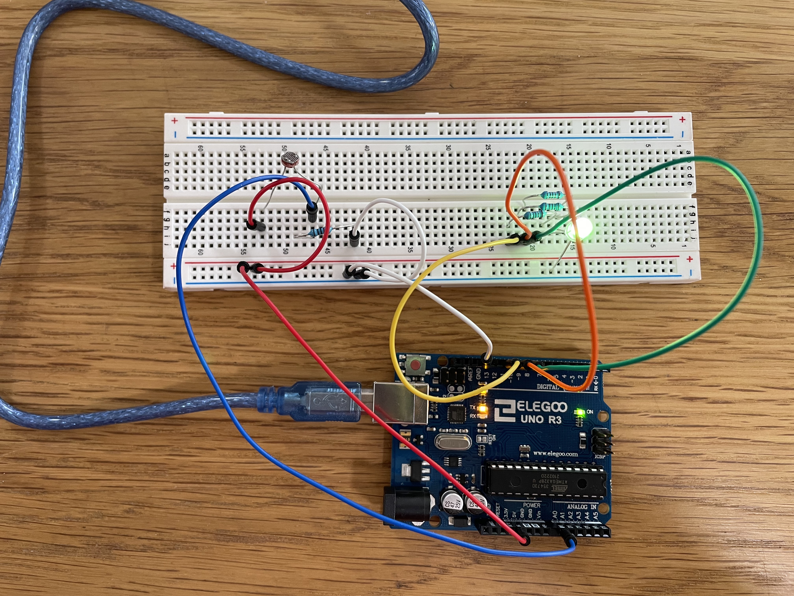

Fade LEDs and Button Project

This GIF shows a circuit that uses photoresistor in a voltage divider to change the state of a tri-color LED from blue (least amount of light) to green(moderate amount of light) to red (high amount of light).

This picture shows arduino and the circuit.

This is the schematic for the circuit. The resistance for the tri-color LED was calculated in the following way. v = (Power source) - (Voltage Drop for LED) v = 5V -1.8V = 3.2V I = 30 mA (Max current through red LED) R = V/I = 3.2V/O.03A = 106.7 Ohms Because of these calculations, I know that I must use a resister that is larger than 106.7 Ohms. I decided to use a 220 Ohms resisters because of this. The resistance for R2 in the circuit with the photoresistor in a voltage divide was calculated based on the range of signal I wanted to measure. Photoresistor resistance ranges from about 0.9K Ohms tooo 9.6K Ohms. Therefore, Halfway = R1High - ((R1High - R1Low)/2) = 9.6K Ohms - ((9.6 K Ohms - 0.9K Ohms)/2) = 5.3K Ohms Therefore R1 (photoresistor) = 5.3K Ohms R2 = (Vout*R1)/(Vin-Vout) = (3.3*5.3K)/(5-3.3) = 6.4K Ohms I selected a large R2 because having smaller resolution is fine for my application.
This is the arduino code that I used. Based on the lighting in the room I was testing the circut in, the values read in the voltage divider were between 375 and 900.